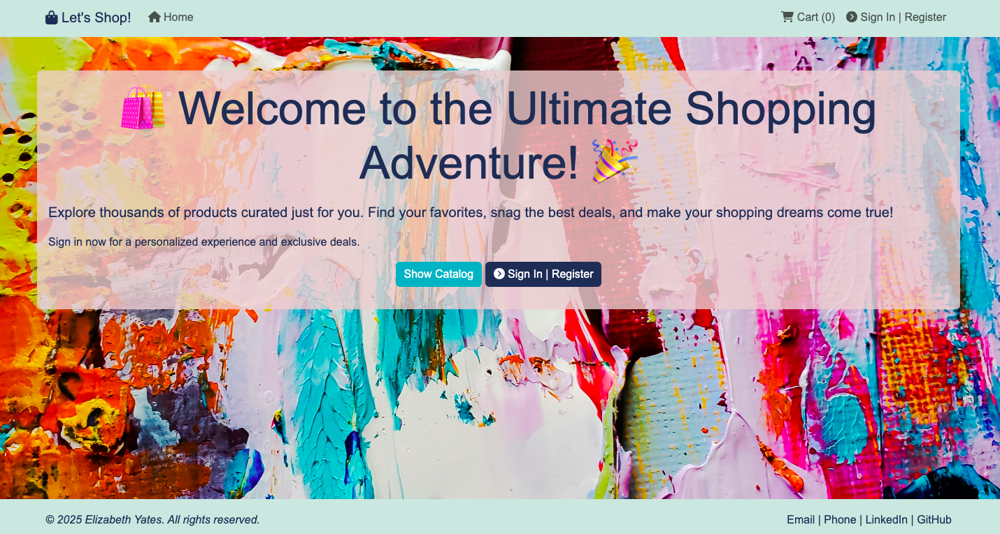
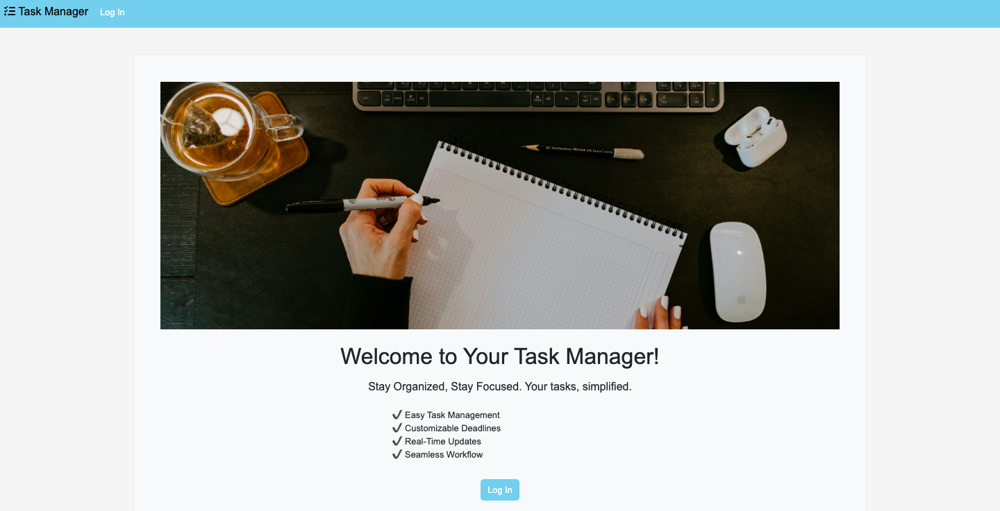
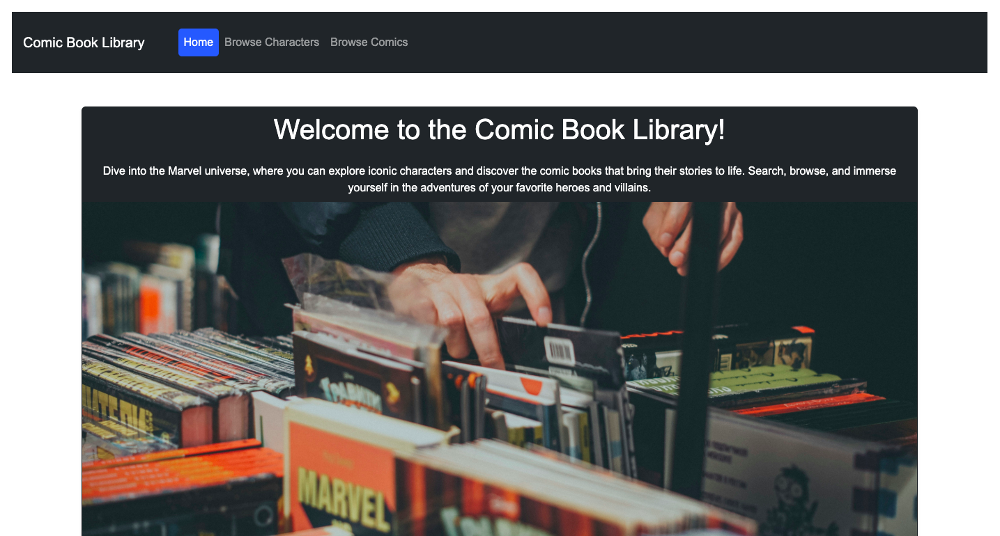
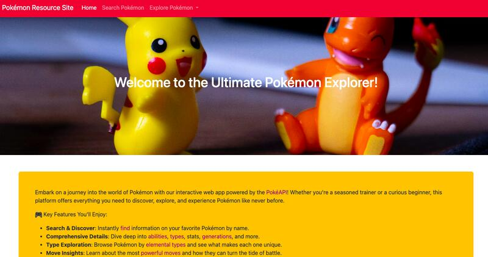
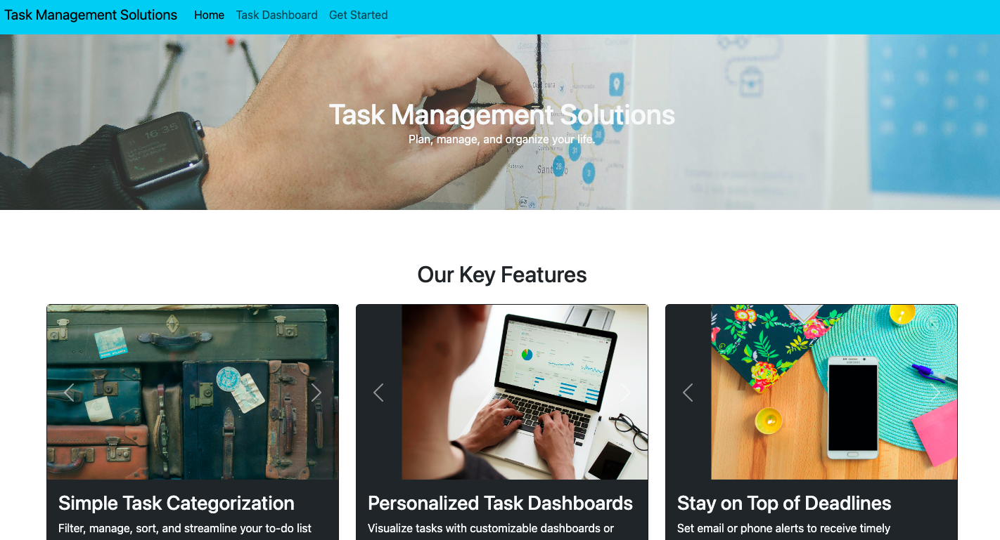
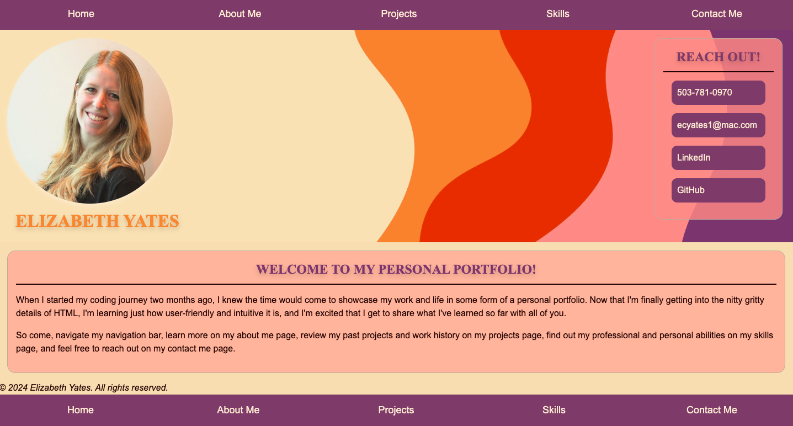
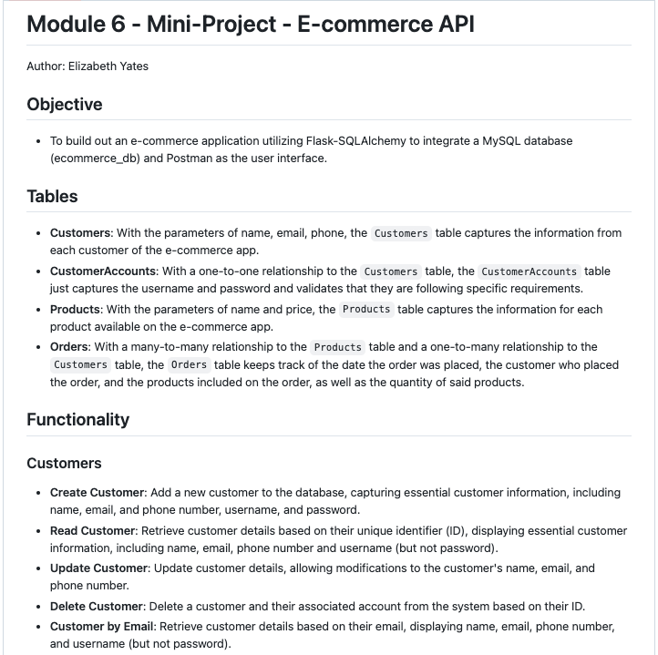
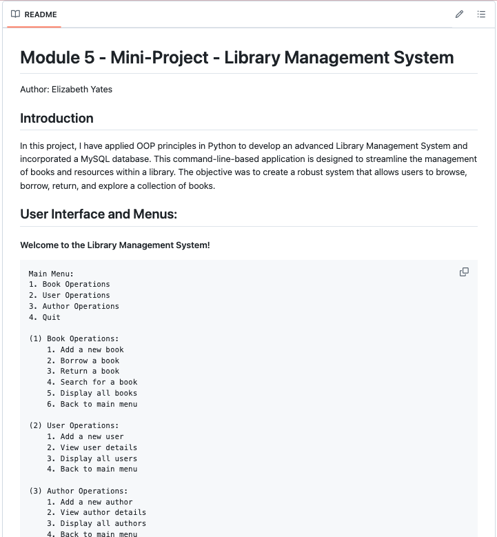
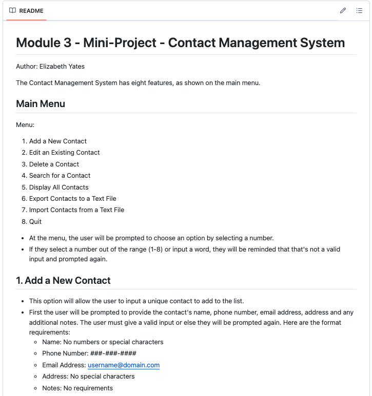
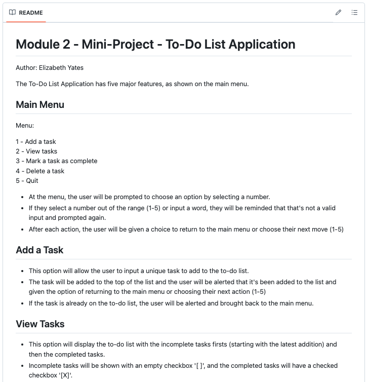

Projects
Final E-Commerce Project
(MAR 2025)

Explore the code on GitHub.
Task Management App
(JAN 2025)

View the code on GitHub.
Marvel API Integration App
(DEC 2024)

Take a look at the code at GitHub.
Pokémon API Integration App
(DEC 2024)

Check out the code at GitHub.
Task Management App
(DEC 2024)

Personal Portfolio
(NOV 2024)

Learn more about the code on GitHub/figcaption>
E-Commerce API
(OCT 2024)

Library Management System
(OCT 2024)

Contact Management System
(SEPT 2024)

To Do List Application
(SEPT 2024)

To see more repositories and projects, take a look at my GitHub.